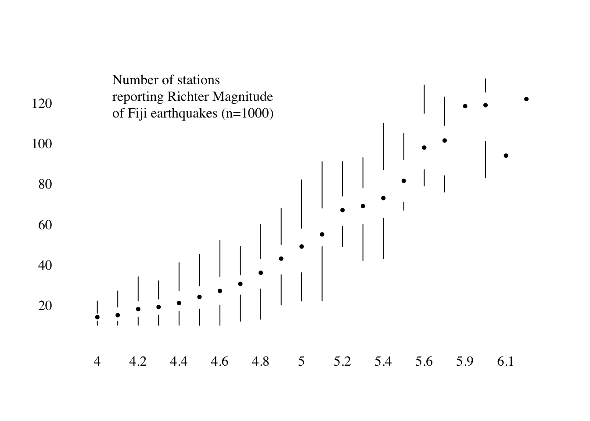

Tools
Visualisation Tools
There are hundreds of visualisation tools and packages used by researchers at University of Oxford and beyond. The IDN cannot hope to be a reference or a recommendation engine for all of these solutions. For a birds eye view of what tools are available you might find this resource useful: http://www.visualisingdata.com/resources/.
In general, visualisation tools fall into one of two categories:
- Point and Click Tools: These allow users to build visualisations interactively, for instance selecting columns from a spreadsheet-like view of your data and clicking “Create BarChart”. Examples of this type of tool include: Excel, SPSS and Tableau.
- Scripting Tools: These require users to write code (or scripts) to generate visualisations, such tools in general have a steeper initial learning curve than “point and click tools” but allow greater overall flexibility and extensibility. Examples of this type of tool include: Python, R.
IDN Supported Tools
The IDN offers advice, support and consultancy in building interactive data visualisations that meet the following conditions:
- Visualisations are hosted online.
- Visualisation may be embedded in personal, research group or publisher websites (via
<iframe></iframe>) - The data behind the visualisations is made available for download and subject to an appropriate data license.
Additionally, the IDN provides Shiny app hosting for University of Oxford researchers - which you can read about on the IDN Shiny Apps page.
Plotly
Plot.ly is a website that allows users to create interactive data visualisations in the web browser with a very easy to use point and click interface. With a free account it is only possible to create public visualisations with the underlying data also made publicly available.
The actual visualisation magic behind the plot.ly website comes from the underlying JavaScript library, plotly. There is a high-level binding to the plotly library available in both R and python, which is described in detail here. You’ll find many examples of visualisations built using the plotly htmlwidget library using R in this website, particularly in the charts section
While Plot.ly does allow users to create interactive data visualisations they can embed in other sites and link to the underlying datasets, it is not a service that the IDN endorses for academic outputs. It is not possible to link a visualisation to a canonical version of a research dataset (i.e. one with a DOI), and the long-term reproducibility of visualisations produced with this tool is questionable.
R
R is an extremely widely used scripting language at University of Oxford, the main reason for the popularity of R is the huge catalogue of freely available (and Open Source) packages available from CRAN. There are packages available for all sorts of things, including:
- Statistical analysis (ANOVA, Bayesian modelling, multivariate analysis)
- Time Series analysis
- Machine learning
- Static visualisation
- Interactive visualisation
It’s the combination of tools for data wrangling, analysis, visualisation and communication that makes R so popular and versatile. Many users of dedicated software packages like SPSS and STATA/SAS are moving to R because of the flexibility that R provides. There are three tools for creating visualisations with R that are particularly worth highlighting, click through the tabs for examples and for links to training materials available to Oxford researchers.
Base R Plotting Functions
Base R is the name given to the collection of packages downloaded on to your machine when R is installed from CRAN, it includes graphics and grid that allow a wide range of static visualisations to be developed.
Base R graphics is widely celebrated for the ease of creating charts with one line, having explicit functions for creating barplot, boxplot, mosaicplot and more. While there isn’t a consistent language/approach to adding complexity to these charts, is possible to build beautiful charts like the one below from http://motioninsocial.com/tufte/. Unfortunately, the IDN is not able to recommend an authoritative tutorial to base R graphics though this is a useful essay.
## Code from http://motioninsocial.com/tufte/
x <- quakes$mag
y <- quakes$stations
boxplot(y ~ x, main = "", axes = FALSE, xlab=" ", ylab=" ",
pars = list(boxcol = "transparent", medlty = "blank", medpch=16, whisklty = c(1, 1),
medcex = 0.7, outcex = 0, staplelty = "blank"))
axis(1, at=1:length(unique(x)), label=sort(unique(x)), tick=F, family="serif")
axis(2, las=2, tick=F, family="serif")
text(min(x)/3, max(y)/1.1, pos = 4, family="serif",
"Number of stations \nreporting Richter Magnitude\nof Fiji earthquakes (n=1000)")
Static charts with ggplot2
ggplot2 provides a complete and consistent “grammar of graphics” for designing static charts with R. It has a fairly complex learning curve as it prioritises consistency over simplicity. The following are excellent resources for learning how to use ggplot2:
- Free online course at datacamp.com on ggplot2
- R Graphics Cookbook: Practical Recipes for Visualizing Data
The chart below is fairly advanced application of ggplot2 that shows what is possible, the original code is from here.
# http://margintale.blogspot.in/2012/04/ggplot2-time-series-heatmaps.html
library(ggplot2)
library(plyr)
library(scales)
library(zoo)
df <- read.csv("https://raw.githubusercontent.com/selva86/datasets/master/yahoo.csv")
df$date <- as.Date(df$date) # format date
df <- df[df$year >= 2012, ] # filter reqd years
# Create Month Week
df$yearmonth <- as.yearmon(df$date)
df$yearmonthf <- factor(df$yearmonth)
df <- ddply(df,.(yearmonthf), transform, monthweek=1+week-min(week)) # compute week number of month
df <- df[, c("year", "yearmonthf", "monthf", "week", "monthweek", "weekdayf", "VIX.Close")]
# Plot
ggplot(df, aes(monthweek, weekdayf, fill = VIX.Close)) +
geom_tile(colour = "white") +
facet_grid(year~monthf) +
scale_fill_gradient(low="red", high="green") +
labs(x="Week of Month",
y="",
title = "Time-Series Calendar Heatmap",
subtitle="Yahoo Closing Price",
fill="Close")
Interactive charts with htmlwidgets
Interactive Viz
Shiny
Shiny is great.
Tableau
We have a page dedicated to Tableau